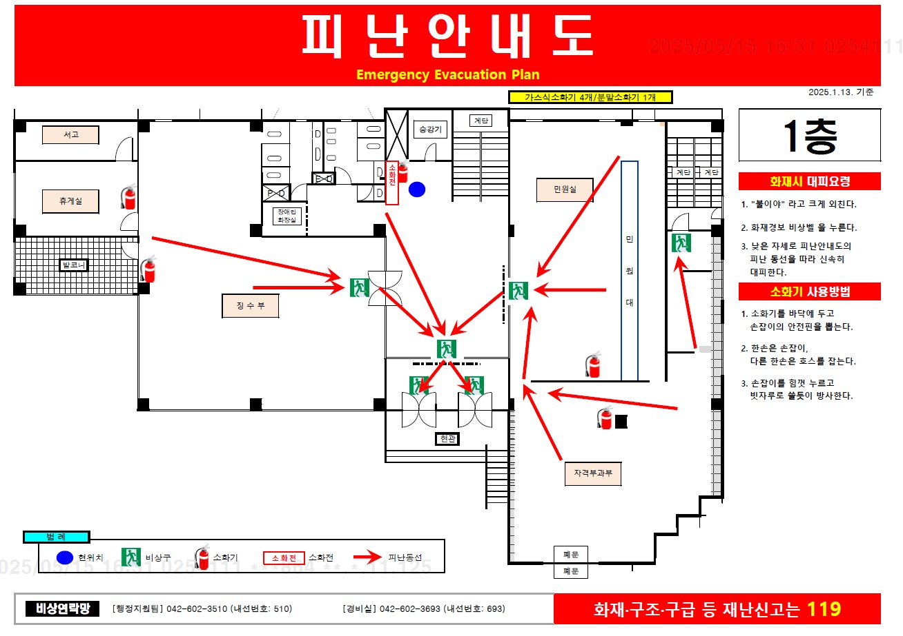

<!DOCTYPE html>
<html lang="ko">
<head>
  <meta charset="UTF-8">
  <title>도담이에게 물어보세요!</title>
  <meta name="viewport" content="width=device-width, initial-scale=1.0">
  <style>
    html, body {
      margin: 0;
      padding: 0;
      height: 100%;
      font-family: 'Arial', sans-serif;
      background: #ffe6f0;
    }

    #chat-wrapper {
      width: 90%;
      max-width: 1280px;
      height: 90vh;
      background: white;
      border-radius: 30px;
      box-shadow: 0 4px 20px rgba(0,0,0,0.1);
      display: flex;
      flex-direction: column;
      overflow: hidden;
      margin: 30px auto;
    }

    #chat-body {
      flex: 1;
      display: flex;
      height: 100%;
      overflow: hidden;
    }

    #chat-header {
      background: #f48fb1;
      color: white;
      font-size: 22px;
      padding: 20px;
      font-weight: bold;
      text-align: center;
      border-top-left-radius: 30px;
      border-top-right-radius: 30px;
    }

    #chat-box {
      flex: 1;
      padding: 20px;
      overflow-y: auto;
      display: flex;
      flex-direction: column;
      gap: 12px;
      font-size: 16px;
      height: 100%;
      box-sizing: border-box;
    }

    .message {
      max-width: 75%;
      padding: 12px 18px;
      border-radius: 20px;
      position: relative;
      animation: fadeIn 0.3s ease;
    }

    .bot { align-self: flex-start; background: #fce4ec; color: #333; }
    .user { align-self: flex-end; background: #f48fb1; color: white; }

    #button-container {
      height: auto;
      min-height: 60px;
      width: 100%;
      padding: 15px 20px;
      background: #fff;
      border-top: 1px solid #eee;
      display: flex;
      flex-wrap: wrap;
      justify-content: center;
      gap: 10px;
      box-sizing: border-box;
    }

    .chat-button {
      background-color: white;
      border: 2px solid #f48fb1;
      color: #f48fb1;
      border-radius: 20px;
      font-size: 15px;
      cursor: pointer;
      transition: 0.2s;
      display: inline-block;
      padding: 10px 20px;
      max-width: 100%;
      white-space: nowrap;
      text-align: center;
      word-break: keep-all;
    }

    .chat-button:hover {
      background-color: #f48fb1;
      color: white;
    }

    img {
      max-width: 100%;
      height: auto;
      border-radius: 8px;
      margin: 10px 0;
    }

    .floor-images {
      display: flex;
      flex-wrap: wrap;
      gap: 10px;
      justify-content: center;
    }

    .floor-images img {
      width: 100%;
      max-width: 100%;
      height: auto;
      border-radius: 12px;
      box-shadow: 0 2px 8px rgba(0,0,0,0.15);
    }

    @keyframes fadeIn {
      from { opacity: 0; transform: translateY(10px); }
      to { opacity: 1; transform: translateY(0); }
    }
  </style>
</head>

<body>

  <div id="chat-wrapper">
    <div id="chat-body">
      <div id="chat-box"></div>
    </div>
    <div id="button-container"></div>
  </div>

  <script>
  // 대화 데이터 정의
const chatData = {
  "시작": {
    text: "안녕하세요! 무엇을 도와드릴까요?",
    buttons: ["층별 안내", "업무별 구비서류 안내", "근무시간", "자주 묻는 질문", "건강검진 정보", "고객의 소리", "비상대피도", "주변 교통 안내" ]
  },
  "처음으로 돌아가기": {
    text: "안녕하세요! 무엇을 도와드릴까요?",
    buttons: ["층별 안내", "업무별 구비서류 안내", "근무시간", "자주 묻는 질문", "건강검진 정보", "고객의 소리", "비상대피도", "주변 교통 안내" ]
  },
  "층별 안내": {
    text: "안내가 필요한 층을 선택해 주세요.",
    buttons: ["지하", "1층", "2층", "3층", "4층", "처음으로 돌아가기"]
  },
  "비상대피도": {
    text: "안내가 필요한 층을 선택해 주세요.",
    buttons: ["지하 대피도", "1층 대피도", "2층 대피도", "3층 대피도", "4층 대피도", "처음으로 돌아가기"]
  },
  "근무시간": {
    text:
    "📌 근무시간 안내\n\n😊 대전서부지사는 평일 오전 9시부터 오후 6시까지 운영합니다.\n\n점심시간🍴은 오후 12시부터 1시까지입니다. 이 시간에도 상담 가능합니다.\n(*일부 업무는 상담이 제한될 수 있습니다.)\n\n❌주말 및 공휴일은 휴무입니다.❌\n\n 주차는 무료입니다!\n\n언제든 편하게 문의해 주세요!",
    buttons: ["처음으로 돌아가기"]
  },
  "주변 교통 안내": {
    text:
   "📍 주소: 대전광역시 서구 만년로68번길 15-13(만년동)\n\n 지상 및 지하 주차장 이용 가능. (무료 주차)\n\n 🚌 버스: '서구보건소 앞' 정류장 하차 (도보 약 4분)\n\n🚇 지하철: 1호선 정부청사역 3번 출구 (도보 약 15분)\n  - 역에서 도보 이동 또는 버스 환승 가능\n\n",
    buttons: ["처음으로 돌아가기"]
  },
 "자주 묻는 질문": {
    text: "궁금하신 내용을 선택해주세요!\n그 외 문의 사항은 가까운 지사를 방문하시거나 고객센터(1577-1000)에서 상담하실 수 있습니다.",
    buttons: ["보험료는 어떻게 납부할 수 있나요?", "카드로 보험료를 납부하면 수수료가 있나요?", "고지서를 우편이 아닌 다른 방법으로 받고 싶어요.", "작년에 건강검진을 받지 못했어요.", "병원에 갈 때, 신분증을 제출해야하나요?", "노인장기요양보험에서는 어떤 서비스를 실시하나요?","돌봄통합지원 사업이 무엇인가요?", "국민건강보험공단 지사는 어디에 있나요?", "처음으로 돌아가기"]
  },
 "업무별 구비서류 안내": {
    text: "궁금하신 내용을 선택해주세요!",
    buttons: ["자격득실확인서 발급", "보험료 납부확인서 발급", "요양급여내역서 발급", "장기요양 인정서 발급", "공동인증서 발급", "처음으로 돌아가기"]
  },


//선택 시 나오는 문구

//층별 안내
  "지하": {
    text: ["<b>🏢 지하: 민원인 주차장 (주차가능 대수: 24대)</b>",
            "<div class='floor-images'></div>"],
    buttons: ["층별 안내", "처음으로 돌아가기"]
  },
  "1층": {
    text: ["<b>🏢 1층 \n 📍자격부과부(로비 오른쪽) : 건강보험 자격상담, 건강보험료 부과 상담 \n📍징수부(로비 왼쪽) :건강보험료 납부 및 체납 상담</b>",
           "<div class='floor-images'></div>"],
    buttons: ["층별 안내", "처음으로 돌아가기"]
  },
  "2층": {
    text: ["<b>🏢 2층\n 📍보험급여부(왼쪽): 요양급여내역서 발급, 건강검진 관련 상담, 재난적의료비지원상담,사전연명의료의향서 신청 \n📍장기요양센터(오른쪽): 장기요양 등급, 복지용구 등 신청 상담</b>",
           "<div class='floor-images'></div>"],
    buttons: ["층별 안내", "처음으로 돌아가기"]
  },
  "3층": {
    text: ["<b>🏢 3층\n 📍건강증진센터</b>",
           "<div class='floor-images'></div>"],
    buttons: ["층별 안내", "처음으로 돌아가기"]
  },
  "4층": {
    text: ["<b>🏢 4층 \n📍행정지원팀: 보건복지분야 공동인증서 발급 \n 📍지사장실</b>",
          "<div class='floor-images'></div>"],
    buttons: ["층별 안내", "처음으로 돌아가기"]
  },

//비상대피도
  "지하 대피도": {
    text: ["<b>지하 대피도</b>",
           "<div class='floor-images'></div>"],
    buttons: ["비상대피도", "처음으로 돌아가기"]
  },
  "1층 대피도": {
    text: ["<b>1층 대피도</b>",
           "<div class='floor-images'></div>"],
    buttons: ["비상대피도", "처음으로 돌아가기"]
  },
  "2층 대피도": {
    text: ["<b>2층 대피도</b>",
           "<div class='floor-images'></div>"],
    buttons: ["비상대피도", "처음으로 돌아가기"]
  },
  "3층 대피도": {
    text: ["<b>3층 대피도</b>",
           "<div class='floor-images'></div>"],
    buttons: ["비상대피도", "처음으로 돌아가기"]
  },
  "4층 대피도": {
    text: ["<b>4층 대피도</b>",
           "<div class='floor-images'></div>"],
    buttons: ["비상대피도", "처음으로 돌아가기"]
  },

// 고객의 소리
"고객의 소리": {
  text: [
    "대전서부지사 직원을 칭찬하고 싶으신가요?\n불편한 점이나 개선이 필요한 사항이 있으신가요?\n 도담이가 여러분의 소중한 의견을 전달해 드립니다!\n\n📍 접수방법 \n 1. 고객의 소리 엽서를 작성해서 고객의 소리함에 넣어주세요! (방문민원용)\n2. QR코드를 스캔해서 온라인으로 내용을 작성해주세요! (온라인 전용)\n\n 언제나 고객님의 소중한 의견을 귀담아듣겠습니다!",
    "<div class='floor-images'>\
      \
      \
    </div>"
  ],
  buttons: ["처음으로 돌아가기"]
},

// 자주 묻는 질문
  "보험료는 어떻게 납부할 수 있나요?": {
  text: [`
    <div><strong>📌납부방법</strong><br>
      - 지사방문 : 무인수납기(키오스크 카드 납부)<br>
      - 인터넷 · 모바일 : 국민건강보험공단 홈페이지, 사회보험통합징수포털, The 건강보험(모바일 앱), 인터넷 지로, 모바일 지로 등<br>
      - 금융기관 : 은행 창구, 현금자동입출금기(CD/ATM) 등<br>
      - 기타 : 자동이체(계좌/카드), 가상계좌 등<br>
      <br>
      그 외에 자세한 수납 상담은 <strong>국민건강보험공단 고객센터(1577-1000)</strong>에서 가능합니다.
    </div>
  `],
  buttons: ["자주 묻는 질문", "처음으로 돌아가기"]
},

"카드로 보험료를 납부하면 수수료가 있나요?": {
  text: ["<div><strong>네, 납부할 금액에 대해 신용카드는 0.8%, 체크카드는 0.5%의 납부대행수수료를 납부자가 부담합니다.</strong><br>국민건강보험법 제79조의2 및 국민연금법 제90조의3, 고용보험 및 산업재해보상보험의 보험료징수 등에 관한 법률 제16조의12에 따라 사회보험료 카드 납부 시 수수료가 부과됩니다.</div>"],
  buttons: ["자주 묻는 질문", "처음으로 돌아가기"]
},

"고지서를 우편이 아닌 다른 방법으로 받고 싶어요.": {
  text: ["<div>전지고지 신청을 통해 카카오톡 알림톡 또는 이메일로 고지서를 받아보실 수 있습니다.<br>전자고지 신청은 국민건강보험공단 고객센터(1577-1000)를 통해 가능합니다.</div>"],
  buttons: ["자주 묻는 질문", "처음으로 돌아가기"]
},

"작년에 건강검진을 받지 못했어요.": {
  text: ["<div>건강검진 기준연도에 검진을 받지 못한 경우, [전년도 미수검 추가 등록] 후 검진을 받으실 수 있습니다.<br>건강검진을 받지 않았다고 해서 불이익은 없습니다.<br>전년도 미수검 추가 등록은 국민건강보험공단 고객센터(1577-1000)를 통해 신청할 수 있습니다.</div>"],
  buttons: ["자주 묻는 질문", "처음으로 돌아가기"]
},

"병원에 갈 때, 신분증을 제출해야하나요?": {
  text: ["<div>건강보험 가입자와 피부양자는 건강보험증 또는 신분증을 요양기관에 제출해야 합니다.<br>(「국민건강보험법」제12조)<br><br>▪️유효한 신분증▪️<br>- 주민등록증, 운전면허증, 장애인등록증, 국가보훈등록증, 건강보험증, 외국인등록증, 외국국적동포 국내거소신고증(F-4), 영주증(F-5)<br>- 모바일 건강보험증(QR인증 포함), 모바일 신분증(운전면허증, 국가보훈등록증), 모바일 외국인등록증, 정부24, PASS 등</div>"],
  buttons: ["자주 묻는 질문", "처음으로 돌아가기"]
},
"노인장기요양보험에서는 어떤 서비스를 실시하나요?": {
  text: ["<div><strong>노인장기요양보험 제도</strong>는<br>고령 및 치매·뇌혈관성 질환 등 노인성 질병으로 인해 일상적인 활동에 어려움이 있어 타인으로부터 장기간 도움을 받아야 한다고 인정되는 자에게 장기요양 서비스를 제공합니다.<br><strong>장기요양 서비스</strong>는<br>신체활동 지원 서비스와 일상생활 지원 서비스 등이 있습니다.</div>"],
  buttons: ["자주 묻는 질문", "처음으로 돌아가기"]
},

"돌봄통합지원 사업이 무엇인가요?": {
  text: ["<div><strong>돌봄통합지원 사업</strong>이란<br>일상생활에 어려움을 겪는 사람이 살던 곳에서 건강한 생활을 영위할 수 있도록 보건의료·건강관리·장기요양·일상생활·주거 등 돌봄 지원을 통합·연계하는 사업입니다.<br>현재 47개 지자체에서 시범 운영 중이며, 참여 지자체는 국민건강보험공단 홈페이지(정책·제도 > 정책방향 > 의료-요양-돌봄 연계)에서 확인 가능합니다.</div>"],
  buttons: ["자주 묻는 질문", "처음으로 돌아가기"]
},

"국민건강보험공단 지사는 어디에 있나요?": {
  text: ["<div>국민건강보험공단은 전국 178개 지사, 54개 출장소를 두고 있습니다.<br>(강남동부지사, 강남북부지사, 서초북부지사, 영등포북부지사, 광산출장소는 장기요양 운영센터가 부재하오니 참고부탁드립니다.)<br><br>국민건강보험공단 지사찾기<br>국민건강보험공단 홈페이지(www.nhis.or.kr): 공단소개 ▶ 조직안내 ▶ 지사찾기<br>The 건강보험(어플): 전체메뉴 ▶ 민원여기요 ▶ 공단지사 찾기</div>"],
  buttons: ["자주 묻는 질문", "처음으로 돌아가기"]
},

//업무별 구비 서류 안내
"자격득실확인서 발급": {
  text: ["<div>✏️본인발급<br>발급자 본인 신분증(무인민원발급기에서 발급 가능)<br><br>✏️대리인 발급<br>- 위임장<br>- 위임자(발급주체) 신분증<br>- 위임받은 자(대리인) 신분증<br>※ 위임자(발급주체)와의 유선 상 본인확인 절차 진행※<br><br>✏️미성년자 발급<br>- 민법상 미성년자녀의 친권자 또는 후견인<br>- 가족관계증명서, 미성년자의 기본증명서(상세 또는 특정)<br><br>그 외의 경우, 국민건강보험공단 고객센터(1577-1000)으로 상담 부탁드립니다.</div>"],
  buttons: ["업무별 구비서류 안내", "처음으로 돌아가기"]
},

"보험료 납부확인서 발급": {
  text: ["<div>✏️본인발급<br>발급자 본인 신분증(무인민원발급기에서 발급 가능)<br><br>✏️대리인 발급<br>- 위임장<br>- 위임자(발급주체) 신분증<br>- 위임받은 자(대리인) 신분증<br>※ 위임자(발급주체)와의 유선 상 본인확인 절차 진행※<br><br>✏️미성년자 발급<br>- 민법상 미성년자녀의 친권자 또는 후견인<br>- 가족관계증명서, 미성년자의 기본증명서(상세 또는 특정)<br><br>그 외의 경우, 국민건강보험공단 고객센터(1577-1000)에서 상담 부탁드립니다.</div>"],
  buttons: ["업무별 구비서류 안내", "처음으로 돌아가기"]
},

"요양급여내역서 발급": {
  text: ["<div>★ 보험사 제출용으로 발급 불가 ★<br><br>✏️본인발급<br>발급자 본인 신분증<br><br>✏️대리인 발급<br>- 위임장<br>- 위임자(발급주체) 신분증<br>- 위임받은 자(대리인) 신분증<br>※ 위임자(발급주체)와의 유선 상 본인확인 절차 진행※<br><br>✏️미성년자 발급<br>- 민법상 미성년자녀의 친권자 또는 후견인<br>- 가족관계증명서, 미성년자의 기본증명서(상세 또는 특정)<br><br>그 외의 경우, 국민건강보험공단 고객센터(1577-1000)에서 상담 부탁드립니다.</div>"],
  buttons: ["업무별 구비서류 안내", "처음으로 돌아가기"]
},

"장기요양 인정서 발급": {
  text: ["<div>✏️본인발급<br>신청자 본인 신분증<br><br>✏️가족 대리 발급<br>- 방문한 가족의 신분증<br>- 가족관계증명서(3개월 이내 발급) 또는 제적등본(불가피한 경우)<br><br>✏️이해관계인 대리 발급(가족이외의 대리인)<br>- 위임장<br>- 수급자 신분증<br>- 대리인 신분증<br><br>그 외의 경우, 국민건강보험공단 고객센터(1577-1000)에서 상담 부탁드립니다.</div>"],
  buttons: ["업무별 구비서류 안내", "처음으로 돌아가기"]
},

"공동인증서 발급": {
  text: ["<div>✏️대표자 본인 신청<br>- 사업자등록증 사본 (또는 사업자등록증명원 원본)<br>- 대표자 실물 신분증 (모바일 신분증❌)<br><br>✏️대리인 발급<br>- 공동인증서 발급 신청서<br>- 대표자(법인) 인감증명서 원본<br>- 사업자등록증 사본 (또는 사업자등록증명원 원본)<br>- 대리인 실물 신분증 (모바일 신분증❌)<br><br>그 외의 경우, 국민건강보험공단 고객센터(1577-1000)에서 상담 부탁드립니다.</div>"],
  buttons: ["업무별 구비서류 안내", "처음으로 돌아가기"]
},


};

//건강검진 정보
  chatData["건강검진 정보"] = {
  text: "당신의 성별은?",
  buttons: ["여성", "남성"]
};

// 건강검진 결과 데이터
const healthGuideMap = {
  "여성_영유아": {
    images: ["images2/infant_checkup1.jpg", "images2/infant_checkup2.jpg"]
  },
  "여성_2~30대": {
    images: ["images2/checkup.png", "images2/screening_female_20s.png"]
  },
  "여성_40대": {
    images: ["images2/checkup.png", "images2/screening_female_40s.png"]
  },
  "여성_50대 이상": {
    images: ["images2/checkup.png", "images2/screening_female_50s.png"]
  },

  "남성_영유아": {
    images: ["images2/infant_checkup1.jpg", "images2/infant_checkup2.jpg"]
  },
  "남성_2~30대": {
    text: "👨‍⚕️ 2~30대 남성은 암검진 없이 일반검진만 받습니다.",
    images: ["images2/checkup.png"]
  },
  "남성_40대": {
    images: ["images2/checkup.png", "images/screening_male_40s.png"]
  },
  "남성_50대 이상": {
    images: ["images2/checkup.png", "images/screening_male_50s.png"]
  },
};

//건강검진 정보 선택데이터
let healthSelection = {gender: null, age: null };

const genderQuestion = {
  text: "당신의 성별은?",
  buttons: ["여성", "남성"]
};

const ageQuestion = {
  text: "당신의 연령층은?",
  buttons: ["영유아", "2~30대", "40대", "50대 이상"]
};

function handleHealthFlow(input) {
  if (["여성", "남성"].includes(input)) {
    healthSelection.gender = input;
    addMessage(input, "user");
    setTimeout(() => {
      addMessage(ageQuestion.text, "bot");
      addButtons(ageQuestion.buttons);
    }, 300);
    return true;
  }

 if (["영유아", "2~30대", "40대", "50대 이상"].includes(input)) {
    healthSelection.age = input;
    addMessage(input, "user");
    const key = `${healthSelection.gender}_${healthSelection.age}`;
    const guide = healthGuideMap[key];

   setTimeout(() => {
      if (guide) {
  let messageText = guide.text || ""; // guide.text가 없는 경우 대비

  if (Array.isArray(guide.images)) {
    guide.images.forEach(imgSrc => {
      messageText += `<br>`;
    });
  } else if (guide.image) {
    messageText += `<br>`;
  }

  addMessage(messageText, "bot");
} else {
  addMessage("해당 조합의 검진 정보가 없습니다. 문의해주세요.", "bot");
}
      addButtons(["처음으로 돌아가기"]);
      healthSelection = { gender: null, age: null }; // 초기화
    }, 300);
    return true;
  }

  return false;
}


function addMessage(text, sender) {
  const chatBox = document.getElementById("chat-box");
  const message = document.createElement("div");
  message.className = `message ${sender}`;
  
  // 줄바꿈 처리
  message.innerHTML = text.replace(/\n/g, "<br>");

  chatBox.appendChild(message);
  chatBox.scrollTop = chatBox.scrollHeight;
}
function addButtons(buttons) {
  const container = document.getElementById("button-container");
  container.innerHTML = "";
  buttons.forEach(btn => {
    const button = document.createElement("button");
    button.className = "chat-button";
    button.innerText = btn;
    button.onclick = () => handleMessage(btn);
    container.appendChild(button);
  });
}

function handleMessage(input) {
  if (handleHealthFlow(input)) return;

  if (input === "처음으로 돌아가기") {
    resetChat();  
    return;
  }

  addMessage(input, "user");
  const response = chatData[input];
  if (response) {
    setTimeout(() => {
      if (Array.isArray(response.text)) {
  addMessage(response.text.join(''), "bot");
} else {
  addMessage(response.text, "bot");
}
      addButtons(response.buttons);
    }, 300);
  } else {
    addMessage("죄송해요, 이해하지 못했어요. 다시 선택해주세요!", "bot");
    addButtons(["처음으로 돌아가기"]);
  }
}
const lastContextStack = [];


function resetChat() {
  document.getElementById("chat-box").innerHTML = "";
  document.getElementById("button-container").innerHTML = "";
  lastContextStack.length = 0;
  healthSelection = { gender: null, age: null };
  handleMessage("시작");
}

function startChat() {
  const chat = document.getElementById("chat-wrapper");
  chat.style.display = "flex";
  resetChat();
}

// 페이지 로드되자마자 바로 챗봇 실행
window.onload = startChat;
   </script>
</body>
</html>


